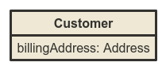
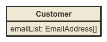
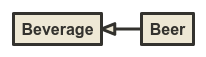

Model diagram documentation
Options
You can specify some options in the query string:
properties: iffalse, it hides the properties of each node (e.g.properties=false)hideInherited: iffalse, it hides inherited properties (e.g.hideInherited=false)exclude: it hides the specified nodes and the relations connected with them (e.g.exclude=User,defensible,SoldierLink)- any directive of nomnoml (e.g.
arrowSize=2&direction=right&stroke=%23ff0000&fill=%23000).
Download source and image
You can download the source code of the diagram as text file by using the link in the index page. It reflects the filters
applied in the URL. Note that going to the /source URI, you get the source code without
any filter.
You can download the diagram as image by right clicking on the canvas and selecting the appropriate option.
Relations
The relations between the models are represented as follows.
One-to-one
A one-to-one relation can be enstablished with a hasOne relation. For instance, a supplier has one account,
and an account can belongs to a supplier. If the belongsTo relation from the account to the supplier is
defined, it is considered as a logical reflection of the hasOne, then it is discarded.

One-to-many
A one-to-many relation can be enstablished with a hasMany or a belongsTo relation. For instance,
a customer has many order, and an order can belongs to a customer. If the belongsTo relation from the
order to the customer is defined and there is a hasMany relation, then it is considered as a logical reflection
of the hasMany and it is discarded. But, if there is no hasMany invers relation, then it
is considered and it is drawn like his plural reflection. In practice, this means that the hasMany and
the belongsTo (with no invers hasOne) are diplayed in the same way.

Many-to-many
A many-to-many relation can be enstablished with a hasAndBelongsToMany or a hasManyThrough relation. For instance, a doctor has and belongs to many patients and vice versa.

In the same way, a doctor and a patient can be linked by the appointment, that is the "through" model.

Polymorphics
The polymorphic relations hasOne or hasMany are displayed with a node representing their "as"
property. For instance, if a barricade (and a stronghold) as defensible has one soldier, then the diagram will look
like:

If a barricade (and a stronghold) as defensible has many soldier, then the diagram will be like:

When you create a hasAndBelongsToMany polymorphic relation, you have also to specify a "through" model.
In this case the "defensible" node will not be displayed in favor of a better readability of the diagram. So, if a
barricade (and a stronghold) has and belongs to many soldier through a SoldierLink, then the diagram will look like:

Emdedded
The embedded and the reference relations are displayed as a property in the model. For instance, if a customer embeds one billing address:
If a customer embeds many emails:
If a customer references many accounts:

Inheritance
Another useful relation represented, but not defined as a proper relation, is the inheritance. This is determined looking up the base model. It's displayed only id the base model is not "Model" or "PersistedModel". For instance, if the base model of a beer were a beverage, so it would be like:
